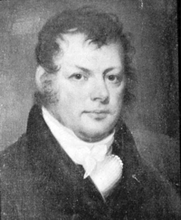

by
Stefan Bielinski
Francis Bloodgood was born in Albany in July 1768. He was the son of riverside residents James and Lydia Van Valkenburgh Bloodgood.
This carpenter's son may have been sent to Yale University to prepare for a career in the law. Upon returning to Albany, he began a legal practice and became involved in public affairs. He was clerk of the NYS Supreme Court - 1797-1825), and director of a number of Albany-based corporations and organizations.
In 1792, he married Elizabeth Cobham. After her death in 1818, he may have married Caroline Whistler. His last wife was Anna Shoemaker, the widow of Robert Morris, Jr - who was mentioned in his will. He was a member and trustee of the Albany Presbyterian Church - where his children were baptized.
In 1800, his first ward household included seven family members and was served by four slaves.
In April 1807, he was involved in a politically motivated street brawl that injured Solomon Van Rensselaer. He later compensated Van Rensselaer for damages incurred. 
His office was in the State Hall on State Street. He lived out on Washington Avenue.
He was elected mayor of Albany in 1830 and served 1831-34.
Francis Bloodgood died in March 1840 at the age of seventy-two.

notes
 Sources: The life of Francis Bloodgood is CAP biography number 7672. This profile is derived chiefly from family and community-based resources.
Sources: The life of Francis Bloodgood is CAP biography number 7672. This profile is derived chiefly from family and community-based resources.
Black-and-white detail of a portrait done about 1810 and attributed to Ezra Ames as printed in Ezra Ames of Albany, p. 142. Biographical material appears on p. 209. During the 1950s, the portrait was in a private collection.
first posted: 4/30/03; last revised 7/20/03